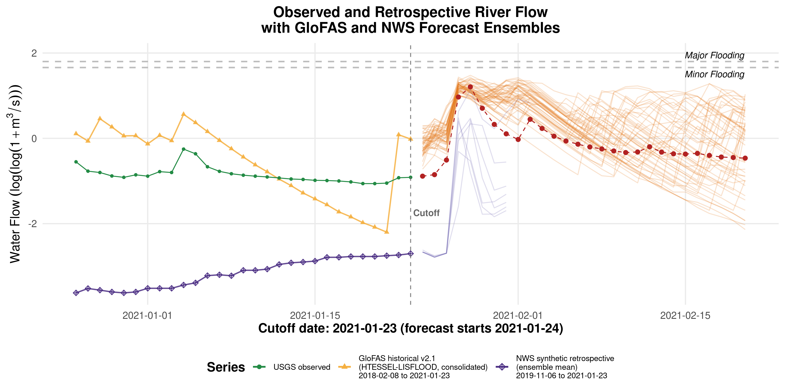
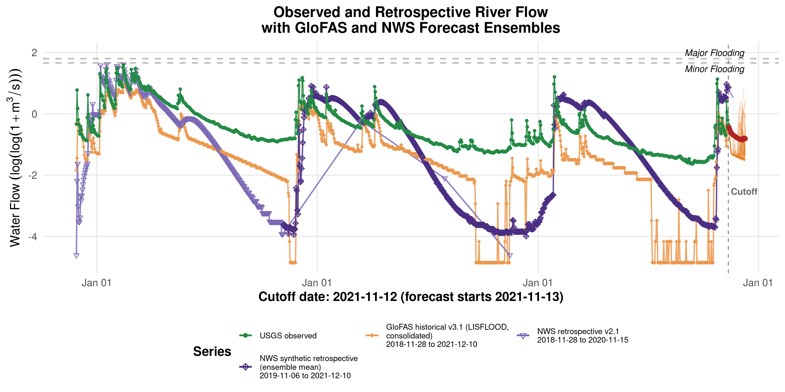
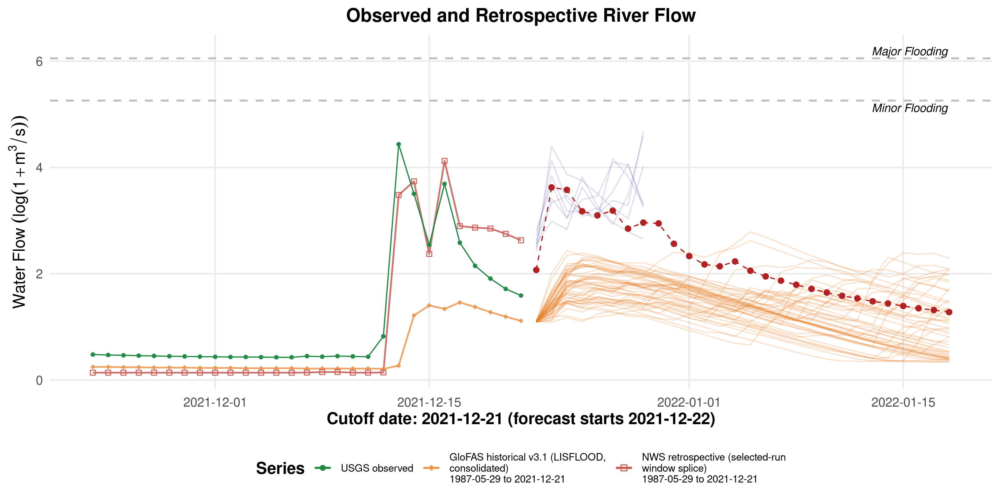
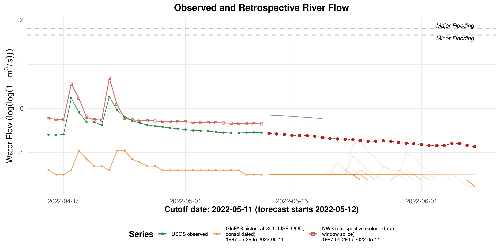
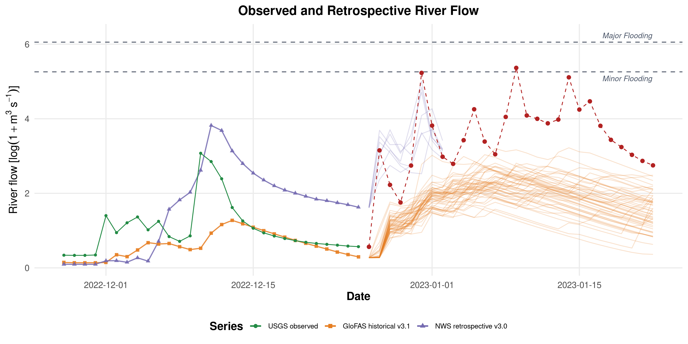

Setup/Support Figures by Cutoff v2
These figures are generated from the validated exAL-M-T1 v2 cutoff-specific setup/support workflow and mirrored into the revised-article repo for review.
See INPUT_ALIGNMENT_AUDIT.md in this same directory for the exact selected-run input alignment and the short-window retrospective explanation.
2021-01-23
Directory: 20210123_exal_m_t1
Bundle class: short_window_synth_bundle
Requested history: 1987-05-29 to 2021-01-23
Retrospective available from: 2018-02-08
Forecast window: 2020-12-26 to 2021-02-20
NWS policy: nws_synth_retro_ens_mean keep-source policy
GloFAS policy: glofas_hist_v21_htessel_cons
Coverage audit: USGS=True, PPT=True, SOIL=True, PCA=True, Retros=False
usgs.png
SHA256: e4281f2ebb41bcb7...
Bytes: 1609778

precip_soilmoisture_climatePC1_faceted_labeled.png
SHA256: 01caa33859fbabf4...
Bytes: 2255438

retrospective_log_discharge_plot_faceted.png
SHA256: d5c2b0e55123f96f...
Bytes: 826617

forecats.png
SHA256: be274fa4df044844...
Bytes: 900718

2021-11-12
Directory: 20211112_exal_m_t1
Bundle class: short_window_synth_bundle
Requested history: 1987-05-29 to 2021-11-12
Retrospective available from: 2018-11-28
Forecast window: 2021-10-15 to 2021-12-10
NWS policy: nws_synth_retro_ens_mean keep-source policy
GloFAS policy: glofas_hist_v31_lisflood_cons
Coverage audit: USGS=True, PPT=True, SOIL=True, PCA=True, Retros=False
usgs.png
SHA256: 3170bddc766a3142...
Bytes: 1612300

precip_soilmoisture_climatePC1_faceted_labeled.png
SHA256: f2cd95b159c62c58...
Bytes: 2255482

retrospective_log_discharge_plot_faceted.png
SHA256: 651032891459fe56...
Bytes: 794752

forecats.png
SHA256: fb9f7dbf1001927e...
Bytes: 443182

2021-12-21
Directory: 20211221_exal_m_t1
Bundle class: histfix_long_history_bundle
Requested history: 1987-05-29 to 2021-12-21
Retrospective available from: 1987-05-29
Forecast window: 2021-11-23 to 2022-01-18
NWS policy: nws_retro_v21 with nws_retro_v30 tail fill after natural v21 coverage end
GloFAS policy: glofas_hist_v31_lisflood_cons
Coverage audit: USGS=True, PPT=True, SOIL=True, PCA=True, Retros=True
usgs.png
SHA256: 3bd4ce066dbdb882...
Bytes: 1613975

precip_soilmoisture_climatePC1_faceted_labeled.png
SHA256: 31ffa386df913da9...
Bytes: 2260636

retrospective_log_discharge_plot_faceted.png
SHA256: c3bdde8cca97c489...
Bytes: 2180408

forecats.png
SHA256: 4bfc3e09fbeede04...
Bytes: 701621

2022-05-11
Directory: 20220511_exal_m_t1
Bundle class: histfix_long_history_bundle
Requested history: 1987-05-29 to 2022-05-11
Retrospective available from: 1987-05-29
Forecast window: 2022-04-13 to 2022-06-08
NWS policy: nws_retro_v21 with nws_retro_v30 tail fill after natural v21 coverage end
GloFAS policy: glofas_hist_v31_lisflood_cons
Coverage audit: USGS=True, PPT=True, SOIL=True, PCA=True, Retros=True
usgs.png
SHA256: cd0ec9d9de1422f7...
Bytes: 1619210

precip_soilmoisture_climatePC1_faceted_labeled.png
SHA256: c8ad904b8b95258d...
Bytes: 2267293

retrospective_log_discharge_plot_faceted.png
SHA256: c7625f762aa9e133...
Bytes: 2182921

forecats.png
SHA256: 1565eb4bea0b2ab8...
Bytes: 292423

2022-12-25
Directory: 20221225_exal_m_t1
Bundle class: short_window_synth_bundle
Requested history: 1987-05-29 to 2022-12-25
Retrospective available from: 2020-01-10
Forecast window: 2022-11-27 to 2023-01-22
NWS policy: nws_synth_retro_ens_mean keep-source policy with documented gapfix
GloFAS policy: glofas_hist_v31_lisflood_cons
Coverage audit: USGS=True, PPT=True, SOIL=True, PCA=True, Retros=False
usgs.png
SHA256: 6de7e5b002232a9e...
Bytes: 1620159

precip_soilmoisture_climatePC1_faceted_labeled.png
SHA256: 895c2b05f819cb44...
Bytes: 2274311

retrospective_log_discharge_plot_faceted.png
SHA256: 2fca2f2fc05e4d51...
Bytes: 789557

forecats.png
SHA256: da06200fdf8dbac6...
Bytes: 694327
